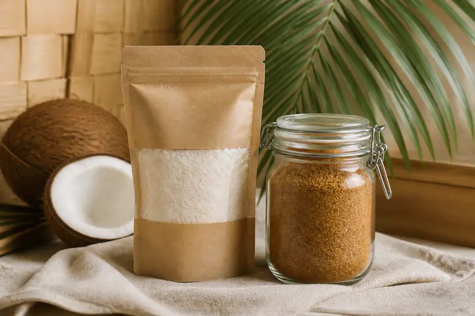

Bestseller
BestsellerVirgin Coconut Oil
Cold-pressed and unrefined, with a soft tropical aroma.
Rs. 850 / 500ml

Exceptional coconut essentials, harvested from our family-grown palms and crafted in small batches for a fresher, richer taste.

Our story starts among the palms of Matara. We work closely with local growers, select every harvest with care and keep processing gentle—so each bottle and pack stays true to the coconut.
Meet the people behind itBestsellerCold-pressed and unrefined, with a soft tropical aroma.
 Fresh batch
Fresh batchFull-bodied coconut milk made for curries, desserts and more.

Gift readyNaturally sweet coconut sugar paired with our fine coconut flour.
Thoughtfully made from farm to doorstep, without compromising people, flavour or the planet.
Harvested from established palms using practices that protect the soil and surrounding ecosystems.
No bleaching, deodorising, fillers or preservatives—only honest coconut goodness.
Secure, considered packaging and dependable delivery anywhere across Sri Lanka.
“The aroma tells you immediately—this is how real coconut oil should taste.”
Malini Perera · Verified customer, Colombo